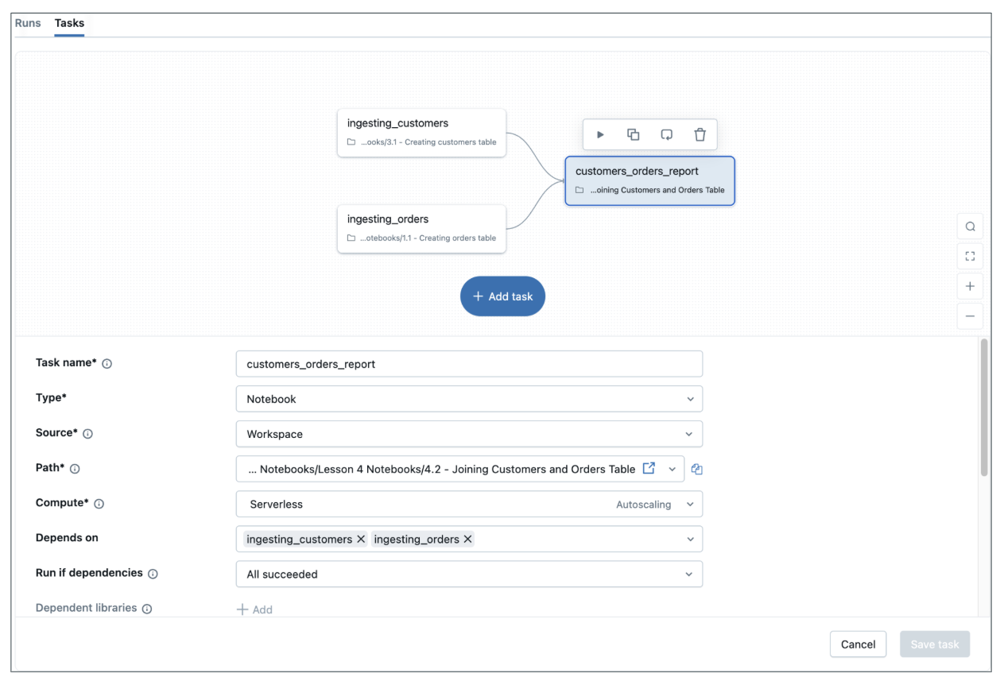
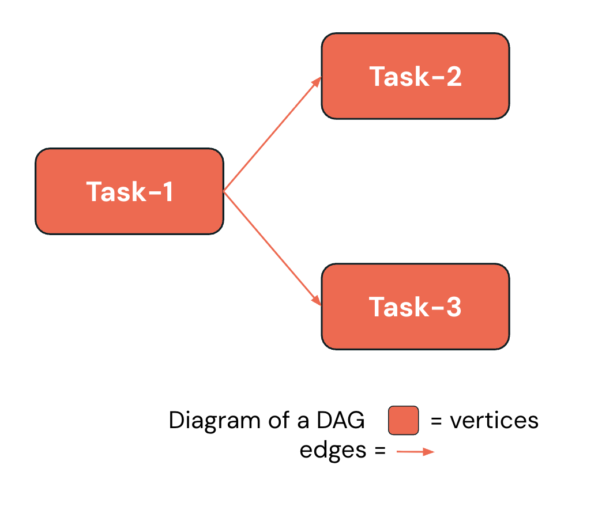

Section 4 · Working with Lakeflow Jobs · Quelle: Kurs 2, Kapitel 2–4
Sobald Daten in Databricks aufgenommen und transformiert werden sollen, braucht es eine Instanz, die diese Arbeitsschritte zuverlässig plant, ausführt und überwacht. Genau das leistet Lakeflow Jobs – die Orchestrierungskomponente von Lakeflow. Sie ist das Bindeglied zwischen einzelnen Notebooks, SQL-Abfragen oder Pipelines und einem verlässlichen, automatisierten Produktivbetrieb. Dieses Dokument erklärt die Grundbausteine: Jobs, Tasks und deren Anordnung als DAG (Directed Acyclic Graph).
Ein Job ist die übergeordnete Ressource in Databricks, mit der Datenverarbeitung, ETL-Läufe, Analysen oder Machine-Learning-Workloads geplant, koordiniert und ausgeführt werden. Ein Job besteht aus einem oder mehreren Tasks – das sind die eigentlichen Arbeitseinheiten, die jeweils eine konkrete Aufgabe übernehmen, zum Beispiel das Ausführen eines Notebooks, eines Skripts oder einer SQL-Abfrage. Diese Beziehung ist hierarchisch: Ein Job ist der Container, die Tasks darin sind die Bausteine, die die eigentliche Arbeit verrichten.

Für jeden Task lässt sich der passende Task-Typ wählen. Databricks unterstützt unter anderem folgende Typen:
Diese Vielfalt erlaubt es, praktisch jede Art von Workload innerhalb eines einzigen Jobs zu orchestrieren – unabhängig davon, in welcher Sprache oder mit welchem Werkzeug ein Team arbeitet. Jeder Task-Typ bringt eigene Konfigurationsoptionen mit: Pfad zum Code, benötigte Bibliotheken, Parameter, Benachrichtigungen und Retry-Verhalten lassen sich pro Task individuell einstellen.
Ein wichtiges Prinzip: Jeder Task in einem Job kann seine eigene Recheninstanz zugewiesen bekommen. Tasks im selben Job können dieselbe Compute-Ressource teilen oder unterschiedliche verwenden – etwa Task 1 auf einem All-Purpose-Cluster, Task 2 auf Serverless und Task 3 auf einem dedizierten Job-Cluster. Diese Flexibilität erlaubt es, Performance und Kosten für jeden einzelnen Task gezielt zu optimieren, statt den gesamten Job auf eine einzige Kompromisslösung festzulegen.
Zur Auswahl stehen im Wesentlichen vier Compute-Kategorien:
Databricks stellt die Abhängigkeiten zwischen Tasks als Directed Acyclic Graph (DAG) dar – ein gerichteter, azyklischer Graph: gerichtet, weil jede Verbindung eine eindeutige Ausführungsrichtung hat, und azyklisch, weil es keine Rückkopplungen (Zyklen) gibt. Ein einfaches Beispiel: Task 1 muss abgeschlossen sein, bevor Task 2 und Task 3 parallel starten können. Diese Abhängigkeiten werden über die Depends on-Einstellung jedes Tasks konfiguriert und lassen sich über UI, REST-API, SDK oder Databricks Asset Bundles definieren.

In der Praxis lassen sich die meisten Workflows auf drei wiederkehrende Muster zurückführen:
| Muster | Beschreibung | Typischer Anwendungsfall |
|---|---|---|
| Sequenz | Tasks laufen strikt nacheinander ab. | Bronze → Silver → Gold in der Medallion-Architektur |
| Trichter (Funnel) | Mehrere Tasks laufen parallel und münden in einen gemeinsamen Folge-Task. | Mehrere Datenquellen werden zusammengeführt |
| Fächer (Fan-out) | Ein Task verzweigt in mehrere parallele Folge-Tasks. | Eine Quelle wird an mehrere nachgelagerte Systeme verteilt |
Ein typischer Einstieg besteht darin, einen Job mit zwei Tasks anzulegen: einem Notebook-Task, der Rohdaten in eine Bronze-Tabelle lädt, und einem SQL-Task, der eine weitere Tabelle aus einer SQL-Datei heraus befüllt. Beide Tasks lassen sich unabhängig voneinander konfigurieren (Pfad, Compute, Parameter) und anschließend über Run now gemeinsam starten. Nach dem Lauf zeigt die Runs-Ansicht den Fortschritt farbcodiert an:
Das folgende Beispiel zeigt, wie sich die per Job-Task erzeugten Tabellen anschließend ganz normal per SQL abfragen lassen:
-- Ergebnis des Notebook-Tasks pruefen SELECT * FROM orders_bronze LIMIT 50; -- Ergebnis des SQL-Tasks pruefen SELECT * FROM sales_bronze LIMIT 5;